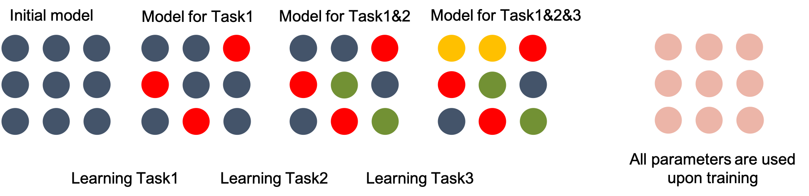
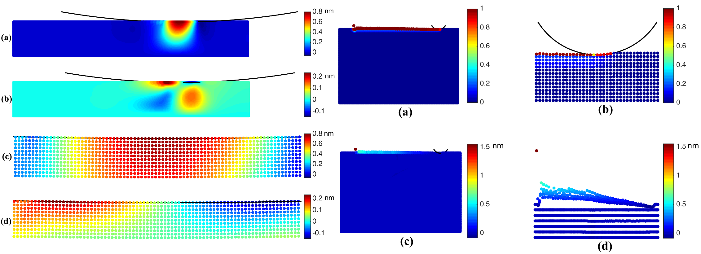
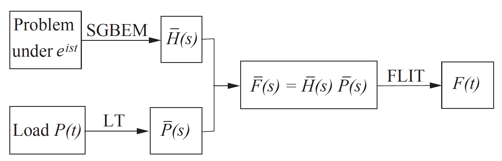
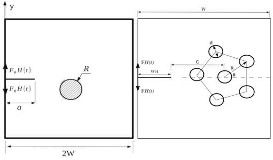

|
Sayna Ebrahimi PhD Candidate EECS Department UC Berkeley Email : sayna at eecs dot berkeley dot edu 


|

|
About Me
I am a double majored PhD student in Computer Science and Mechanical Engineering at UC Berkeley. I am passionate about teaching machines how to build up on what they have learned to continually acquire new capabilities without forgetting what they were taught in the past! This also includes developing algorithms that enable machines to learn representations from few observations and scues and generalize to instances they have never seen before.
I am a part
of Berkeley AI Research Lab (BAIR) advised by Trevor Darrell in EECS and David Steigmann in ME.
I also have the pleasure to work with
Research Interests:
Deep Learning, Continual learning, Active Learning, Few Shot Learning
News:
Publications

Adversarial Continual Learning
Sayna Ebrahimi, Franziska Meier, Roberto Calandra, Trevor Darrell, Marcus Rohrbach
European Conference on Computer Vision (ECCV 2020)
[Paper]
[Code]

Uncertainty-Guided Continual Learning in Bayesian Neural Networks
Sayna Ebrahimi , Mohamed Elhoseiny, Trevor Darrell, Marcus Rohrbach
International Conference on Learning Representations (ICLR 2020).
[Paper]
[Code]
[Talk Video]
[Project Page]

Variational Adversarial Active Learning
Sayna Ebrahimi*, Samarth Sinha*, Trevor Darrell
*denotes equal contribution.
Internation Conference on Compute Vision (ICCV 2019) (Oral)
[Paper]
[Code]
[Talk Video]
[Poster]
[Project page]

Generalized Zero and Few-Shot Learning via Aligned Variational Autoencoders
Edgar Schonfeld, Sayna Ebrahimi , Samarth Sinha, Trevor Darrell, Zeynep Akata
Computer Vision and Pattern Recognition Conference (CVPR 2019)
[Paper]
[Code]

Gradient-free Policy Architecture Search and Adaptation
Sayna Ebrahimi, Anna Rohrbach, Trevor Darrell
Conference on Robot Learning (CoRL 2017) (Spotlight)
[Paper]
[Project page]
[Bibtex]
Peer-Reviewed Workshop Papers

Variational Adversarial Active Learning - Extended Abstract
Sayna Ebrahimi*, Samarth Sinha*, Trevor Darrell
*denotes equal contribution.
WiCV workshop at CVPR 2020, (Oral)
[Paper]
[Code]
[Talk]
[Poster]
[Project page]

Uncertainty-Guided Continual Learning in Bayesian Neural Networks - Extended Abstract
Sayna Ebrahimi , Mohamed Elhoseiny, Trevor Darrell, Marcus Rohrbach
The IEEE Conference on Computer Vision and Pattern Recognition (CVPR) Workshops, 2019, pp. 75-78
[Paper]
[Code]
[Project page]

Cross-Linked Variational Autoencoders for Generalized Zero-Shot Learning
Edgar Schonfeld, Sayna Ebrahimi, Samarth Sinha, Trevor Darrell, Zeynep Akata
Accepted in two workshops:
Learning from Limited Labeled Data Workshop ICLR 2019 [Paper]
Uncertainty and Robustness in Deep Visual Learning Workshop, CVPR 2019 [Paper]
[Code]

Gradient-Free Supervised and Unsupervised Learning with Rewards
Sayna Ebrahimi, Anna Rohrbach, Trevor Darrell
WiCV workshop at CVPR , 2018 (Oral)
[Paper]
Theses
Continual Learning with Neural Networks
Sayna Ebrahimi; Spring 2020
[Computer Science]
Mechanical Behavior of Materials at Multiscale: Peridynamic Theory and Learning-based Approaches
Sayna Ebrahimi; Spring 2020
[Mechcanical Engineering]
Older Work
The following represents some of my older work in ME and is not representative of my current research interests.
Journal papers:

Peridynamics analysis of the nanoscale friction and wear properties of amorphous carbon thin films
Sayna Ebrahimi, David Steigmann, Kyriakos Komvopoulos
In Journal of Mechanics of Materials and Structures 2015.
[Paper]
[Bibtex]

Dynamic analysis of cracks using the SGBEM for elastodynamics in the Laplace-space frequency domain
Sayna Ebrahimi, Anh-vu Phan
Engineering Analysis with Boundary Elements 2013.
[PDF]
[Bibtex]

Dynamic crack growth modeling technique based upon the SGBEM in the Laplace domain
Sayna Ebrahimi, Anh-vu Phan
Acta Mechanica 2015.
[PDF]
[Bibtex]
Conference Papers/Talks:
Parallel Algorithms for CPU and GPU Peridynamic Computation
Sayna Ebrahimi, Michael Taylor, David Steigmann
International Mechanical Engineering Congress & Exposition (ASME-IMECE), 2016, Phoenix, Arizona (Oral)
A Mechanical Sub-Element Formulation of Plasticity in Ordinary State-Based Peridynamics
Sayna Ebrahimi, Michael Taylor, David Steigmann
International Mechanical Engineering Congress & Exposition (ASME-IMECE), 2016, Phoenix, Arizona (Oral)
Peridynamic Model for Thin Shells via Descent from Three-Dimensional State-Based and Bond-Based Peridynamics
Michael Taylor Sayna Ebrahimi, David Steigmann
International Mechanical Engineering Congress & Exposition (ASME-IMECE), 2016, Phoenix, Arizona (Oral)
Peridynamics Analysis of Elastic-Plastic Contacts
Sayna Ebrahimi, David Steigmann, Kyriakos Komvopoulos,
US National Congress on Computational Mechanics (UNCCM), 2015, San Diego, California (Spotlight)
Wear process analysis of thin-films using Peridynamics
Sayna Ebrahimi, David Steigmann, Kyriakos Komvopoulos,
US National Congress on Theoretical and Applied Mechanics (UNCTAM), 2014, East Lansing, Michigan (Spotlight)
Laplace SGBEM Modeling of Dynamic Crack Propagation through a Cluster of Inclusions
Sayna Ebrahimi, Anh-Vu Phan
US National Congress on Theoretical and Applied Mechanics (UNCTAM), 2014, East Lansing, Michigan (Spotlight)
Dynamic crack growth analysis in the Laplace-space frequency domain by the symmetric-Galerkin boundary element method
Sayna Ebrahimi, Anh-Vu Phan
International Mechanical Engineering Congress and Exposition (ASME-IMECE), 2013, Raleigh, North Carolina (Oral)
Peridynamic Analysis of Crack-Inclusion Interaction in Unidirectional Fiber-Reinforced Composites
Sayna Ebrahimi, Anh-Vu Phan
Early Career Technical Conference (ASME-ECTC), 2012, Atlanta, Georigia (Spotlight)